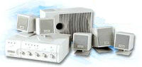
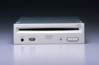
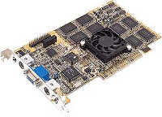

|
|
| 当前位置：电脑报电子版 > 1999 年 > 34 期 > 硬件周刊 > 组装家用电脑DVD系统 |
| 《 组装家用电脑DVD系统 》 |
| 一、声卡 1．3D音效。声卡是计算机系统的喉舌,现在的PCI声卡大多音质优良,在音质相当的情况下,音效表现是选择的关键。而在3D音效表现方面，主要有A3D及EAX两大卖点。A3D(Aureal 3D)推出时间较早,有一大批支持其音效表现的游戏问世,它的特点是用两只音箱实现立体音效,可处理多普勒效应、声波追踪,支持反射、吸收等特性。EAX(Environmental Audio Extensions环境音效扩展集)是创新提出的音效API,特点是用四只以上音箱回放，定位精确，混响声与画面统一性好。目前使用EAX的游戏虽然不多，但可通过游戏补丁支持,不少游戏厂商也开始推出支持EAX的产品。2．声卡产品。确定了3D音效之后，让我们来看看具体的产品：创新的SB Live！是其旗舰产品，音频效果一流，带有子卡，可实现八声道输出，独有的SoundFont技术使其MIDI效果超凡绝伦，如果在乎性价比的话，可选择SB Live!Value。普及型的产品有创新的PCI128，采用了5507芯片，具有41环绕能力,32位硬波表；PCI64、PCI32采用相同的芯片ES1370,32位硬波表,创新配了不同的驱动程序而成为了两个产品，对于PCI128、PCI64、PCI32须到http:∥wwwctlsgcreafcom/support/drivers或http:∥wwwcreative－asiacom/support/drivers下载支持EAX的驱动程序。《电脑报配套光盘》’99春季特刊也有这些驱动程序，它们可增强3D音效定位，但对EAX的混响、和声等环境音效处理能力较弱。 帝盟的产品起点较高，每款均是64位硬波表，S90、M80及MX200支持A3D10，MX300支持A3D20，大多采用专用芯片，品质优秀，且兼容性极好。关于PCI声卡的具体选购，可以参见本报上期文章《PCI声卡选购面面观》。 3．数字音频接口。声卡的音效表现除了芯片的性能外，数字音频接口（S/P DIF）也显得非常重要。S/P DIF（The SONY/PHILPS Digitals Interface Format）是由索尼和飞利浦共同制订的数字界面格式，一般是一只RCA插座，它可将音源在数模转换之前输出，音质不受声卡的DAC及放大器的影响，音质更上一层楼。它可支持AC－3输出的功能：将S/P DIF与AC－3解码器的数码输入口相接，我们即能得到AC－3的51声道输出。其中MX300、SB Live！带有S/P DIF接口。部分采用Yamaha 724芯片的声卡亦提供了S/P DIF，且MIDI效果好，如中凌的3DS724A。如果已有四声道声卡而没有S/P DIF接口，也可通过软件解码AC－3经四声道输出，软AC－3可以将中置声道信息分解入左右声道,比较接近原音效果。 二、功放、音箱 从经济角度出发，一般家用功放均有多声道输出，配有四只以上音箱，我们可以不用多少投入就可以实现立体音效。如果你对原有环绕音效不满意，或没有功放音箱，那么选择一套合适的功放音箱是关键。起点要求较高的话，可以选用带AC－3解码的功放，在播放带AC－3的影碟时，还原度极好，向下兼容杜比环绕。重放游戏音效时由于功率充裕，声道均衡，所以定位好、失真低、低频充足。在还原游戏音效时,还要看声卡及功率放大部分,若不是玩杜比游戏,则与功放解码无关。功放产品可选择雅马哈系列、安桥系列或国内的索普、厦新等。在音箱选择方面，建议选用国产惠威，银笛、雷诺、南鲸等嗽叭，再购买空箱自行制作，也可购买成品优质音箱，这里就不再赘述。 如果动手能力较差的话，可直接选择创新的DeskTop Theater 51音箱系统，它内置杜比数字解码器（Dolby Digital Decoder），与SB Live!配合即可享受到强烈的杜比环绕声效果和震撼的EAX游戏音效。但要真正实现AC－3效果，还必须连接AC－3解码器。 如在意性价比的话，可选用创新的FourPointSurround FPS2000 Digital或PCWoks FourPointSurround FPS1000（即41音箱系统），配合支持双通路四音箱的声卡产品即可实现优质的音效回放。对于廉价系统，使用支持双通路四音箱的声卡配合优质的有源音箱也可满足需要。 三、DVD－ROM DVD作为新兴产品，短短几年就更新了几代，最新的第三代产品价格已在千元左右。在碟片方面虽然很难看到DVD软件，但DVD影片却大量面市,DVD－ROM淘汰CD－ROM只是时间问题。由于第二代和第三代产品之间价格差距不大，不再推荐购买，目前常见的新产品有Sony DDU220E、Creative PC－DVD、ToshibaSD－M1202、PioneerDVD－A03S等。其中首推先锋(Pioneer)5倍速产品DVD－A03S，它同时具备32倍速CD－ROM的数据读取能力，平均随机寻道时间为100ms。它采用吸盘式结构，噪音小、读盘能力强。同时吸盘设计好，不会触及盘片数据面，安装时可以水平或垂直放置，具有较大的灵活性。而Samsung产品的性价比较高，日立有款4倍速的也跌进900元。必须注意，市面上的Toshiba SD－M1102（二代2倍速产品）虽价格低，但读盘能力差。 第三代DVD－ROM有部分产品增加了区码设置，如创新PC－DVD 5240E、康柏2500等都有区码限制的CSS乱码系统。若你有幸拥有一只CSS的DVD－ROM，而且已经不能再改区码了，但你又想看其他区的影片，那么你可到该DVD－ROM厂商的主页拉一个Firmware(光驱内可擦写的基本信息）升级包，按其所示步骤进行升级即可初始化其修改次数。不过此项操作千万要慎重，否则可能造成DVD－ROM的无法使用。对于原来没有CD－ROM的用户，宜选双光头的DVD产品，如Sony DDU220E，以减少对DVD光头损害。 四、显示卡 对于电脑DVD系统，显示卡对于系统整体性能的优劣影响非常大。从第二代3D加速芯片到现在流行的第四代加速芯片，DVD影片的软件解码功能也越来越被厂家重视，同时显示卡的视频输出功能也是必不可少的。对于普通用户可选择采用中低档3D芯片的显示卡，如Riva128、i740、ATI Rage、Savage3D等，它们都支持DVD的软件解码和视频输出，也能应付目前一些3D游戏的需要。如果不在乎游戏性能的话，也可选择基于SIS 6326的显示卡，改进版支持8M显存，DVD解压效果较好，在Pentium MMX200的系统中即可流畅播放。在稍高档次的选择中可采用Riva TNT、G200以及新一代产品中的Riva TNT2、Voodoo3、G400等，这些产品性能优异，处理3D游戏轻松自如，DVD解码效果也非常好，但价格较高，对于带TV输出的型号尤甚,用户购买时可量力而为。在显示卡的品牌选择上，华硕系列产品的视频功能强大，品质也不错，如华硕的AGP3X00/TV显示卡，带有视频输入输出功能，效果不错，其他如帝盟、丽台等同类芯片的产品也各具特色，值得选购。但必须注意的是，有些显示卡自带的TV输出功能，由于DVD视频输出规范的限制，将无法实现DVD的视频输出。还有的使用Savage3D芯片的显卡，由于芯片代号的不同，也可能无法实现DVD视频输出。 另外还用一类专用的DVD解压卡，可以顺利实现DVD回放，如创新公司推出的PC－DVD套件中的Creative Dxr2卡，内置DVD硬解压芯片，支持AC－3和S－Video和普通视频输出。 五、DVD播放软件 市面上已经许多播放软件，许多新一代的显示卡都附带DVD播放软件，其中以PowerDVD最为流行，它有两种版本，一个是针对SIS显卡优化版本，效果好且对CPU要求较低，但目前已不多见；另外一个是正式通用版，对系统要求较高，CPU应在PⅡ266以上，提供AC－3解码输出，在15以上版本支持S/P DIF输出，并提供对AMD的3D NOW！优化。PowerDVD界面友好，交互性强，除支持DVD播放外，VCD的播放效果也相当好。Xing是老牌的解压软件提供商，其DVD解压软件Xing DVD最新版为20，支持AC－3输出，CPU要求与Power DVD相差无几，还能播放VOB格式文件。不过Xing公司严格遵守有关规范，它的DVD软件有区码限制。其他还有WinDVD解压软件，它回放的图像清晰，功能强大，操作界面像真正的DVD播放器，提供对众多音效的支持，包括4音箱及S/P DIF输出。 六、连接 所有的配件选购齐全，我们来看看如何合理布线。这套DVD系统的音视频输出包括以下几个方面：1．模拟的音频信号，四个以上的音频信道应用屏蔽线连接至功放，最好是用单芯线逐个对应相连。 2．视频信号，如彩电有S端子，那么尽量采用S端子线相连。线材也应采用屏蔽线。 3．数字音频输出，S/P DIF信号可用单芯屏蔽线，插头与第一条相同。 4摇杆信号，多为模拟及低频信息，可用非屏蔽的多芯线。 由于没有足够长的成品连接线，对于连线多数应自制。音频线、S/P DIF线较简单，在单芯线两端压接上莲花头即可完成。视频线宜用有线电视电缆制作，而S端子线可用成品S端子线（一般约1m长）中间剥开，先剪断一根芯线，另用一根线将两端焊接好，然后剪断另一根，依此重复操作，确保连接无误后用胶布封之即可。用S端子线比用复合视频连接播放的效果要好得多，但连线过长，对干扰的屏蔽要求也会增加，在超过一定长度后，亮度与色彩还会相互影响，降低清晰度。摇杆连线宜用专用D形15针接头插座制作，插座的每一脚应相对焊接，难度不是很大，但操作比较繁琐。由于电视和电脑通常不会摆在相近的位置，在视频信号输送到电视机后，如果想使用鼠标控制，也可把鼠标连接线加长，它的制作过程也和S端子线做法相同，将鼠标线剪开延长即可。如果还想方便的话，可在电脑桌上另用一串口鼠标或USB鼠标，两个鼠标可同时工作，不必来回插拔鼠标。 在布线上，电脑与电视和功放的连线可沿墙走，可利用家具摆设挡住，无碍大雅。摇杆及鼠标连线由于要置于方便操作的位置，其连线可使用地毯覆盖，最好用厚一些的地毯，一不至于绊脚，二有利于吸音。在墙上也宜用一些布料等柔软物以减少反射，使定位准确。若无动手经验，可请音响店代制连线。 一切连接完毕，打开你的电脑、电视和功放，你就可以感受到这套家用DVD系统带来的强烈效果了！ （浙江 朱曜明） |
| 下载本期推荐软件 | 页 首 |
| 《电脑报》版权所有，电脑报网站编辑部设计制作发布 |